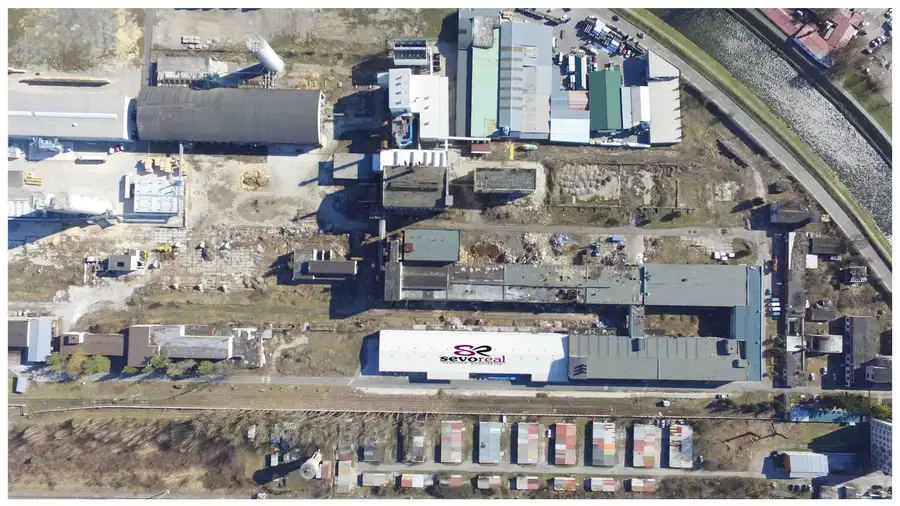
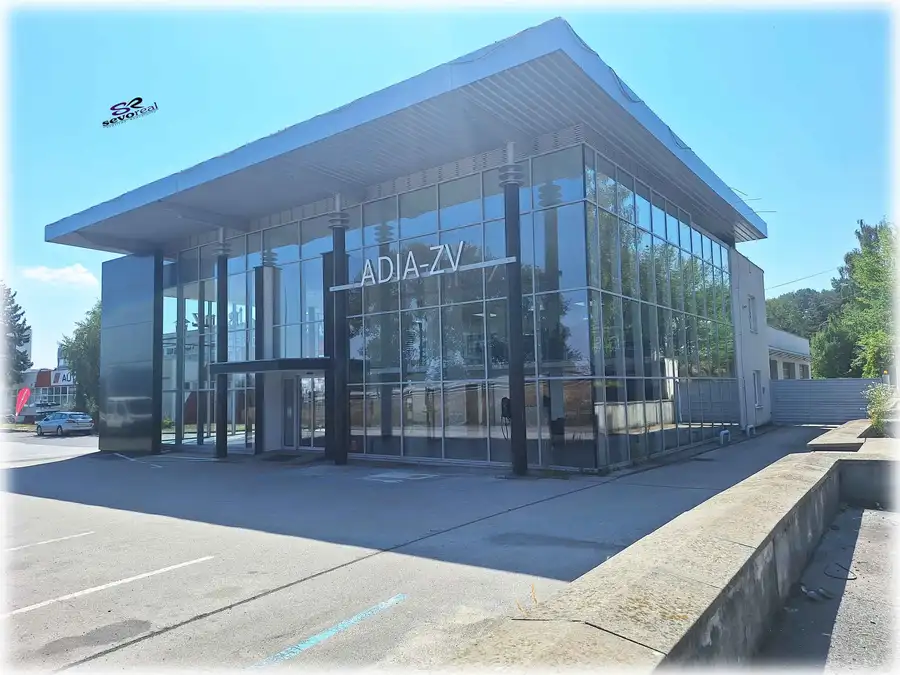
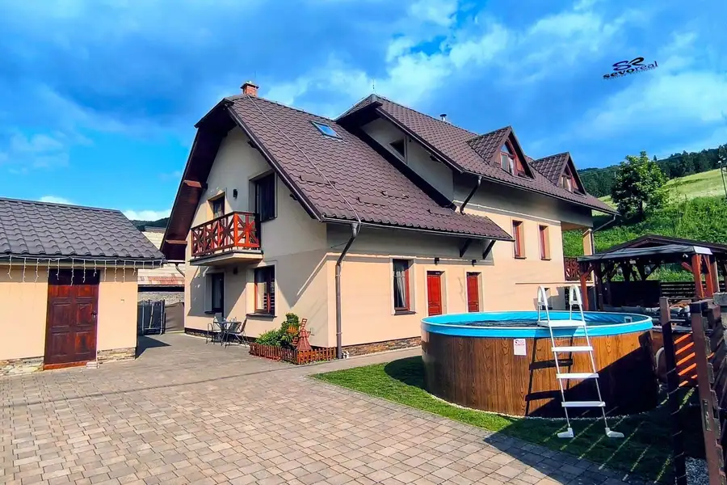
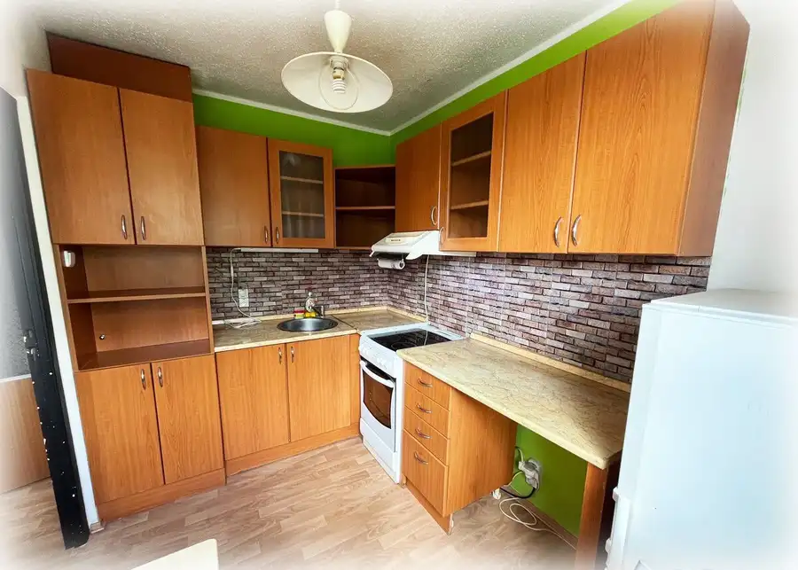

Voľné spevnené plochy na parkovanie / areál Smrečina / Banská Bystrica
Banská Bystrica

- Plocha100 m²
- StavPôvodný stav
O nehnuteľnosti
Realitná kancelária SEVOReal, s.r.o. ponúka na prenájom voľné spevnené plochy v areáli bývalého závodu Smrečina.Voľné spevnené plochy – ideálne využitie ako parkovanie pre kamióny, nákladné autá, autobusy...Najväčšie výhody sú vynikajúca poloha v blízkosti vlakovej a autobusovej stanice a bezkonkurenčná cena – 15,-- eur/m2/rok + DPH.Zabezpečenie areálu – administratívna budova a okolie je zabezpečené kamerami a senzormi s pripojením na pult centrálnej ochrany.V areáli je možné prenajať si aj ďalšie priestory:-haly-skladové priestory-kancelárieV prípade detailnejších informácií alebo dohodnutia obhliadky nás neváhajte kontaktovať:Meno: Gabriel SnitkaTel. kontakt: +421 902 380 620E-mailová adresa: gabriel.snitka@gmail.comRealitná kancelária: SEVOReal, s.r.o.Webová stránka: www.sevoreal.sk
Parametre
- Druh
- Spevnené plochy
- Dátum zverejnenia
- 23. 07. 2026
- Elektrina
- Nedostupné
- Energetický certifikát budovy
- nie je
- Odpadové vody
- Nedostupné
- Plyn
- Nedostupné
- Stav nehnuteľnosti
- Pôvodný stav
- Typ
- Prenájom
- Typ konštrukcie
- Iná
- Voda
- Nedostupné
- Zastavaná plocha
- 100 m²
- Úžitková plocha
- 100 m²
Kde to je


Mohlo by Vás zaujímať

Komerčné priestoryNové 1 290 000 €Predajný autoservis / Zvolen - Stráž Zvolen 1046 m²
Iný rekreačný objektNové 565 000 €Vynikajúca investičná príležitosť / exkluzívna chata s vlastným wellness a herňou / Liptovské Revúce / okres Ružomberok Liptovské Revúce 385 m²
BytNové 119 900 €1 izbový bauring / Rudlová - Fatranská / Banská Bystrica Banská Bystrica 1-izbový30.1 m²4. podlažie